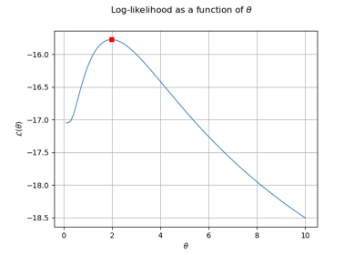
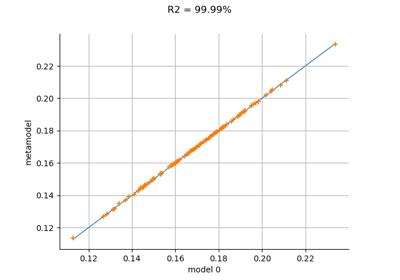
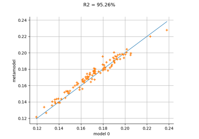

ConstantBasisFactory¶
- class ConstantBasisFactory(*args)¶
Constant basis factory.
- Parameters:
- dimensionint
Input dimension of the basis.
See also
Notes
A factory for constant basis of input dimension dimension.
Examples
>>> import openturns as ot >>> basis = ot.ConstantBasisFactory(2).build() >>> f = ot.AggregatedFunction(basis) >>> x = [2, 3] >>> print(f(x)) [1]
Methods
build()Build the basis.
Accessor to the object's name.
getName()Accessor to the object's name.
hasName()Test if the object is named.
setName(name)Accessor to the object's name.
- __init__(*args)¶
- getClassName()¶
Accessor to the object’s name.
- Returns:
- class_namestr
The object class name (object.__class__.__name__).
- getName()¶
Accessor to the object’s name.
- Returns:
- namestr
The name of the object.
- hasName()¶
Test if the object is named.
- Returns:
- hasNamebool
True if the name is not empty.
- setName(name)¶
Accessor to the object’s name.
- Parameters:
- namestr
The name of the object.
Examples using the class¶



Kriging : draw the likelihood

Kriging : cantilever beam model
Kriging : cantilever beam model

Kriging the cantilever beam model using HMAT
Kriging the cantilever beam model using HMAT


Kriging: choose a polynomial trend on the beam model
Kriging: choose a polynomial trend on the beam model


Kriging: metamodel with continuous and categorical variables
Kriging: metamodel with continuous and categorical variables